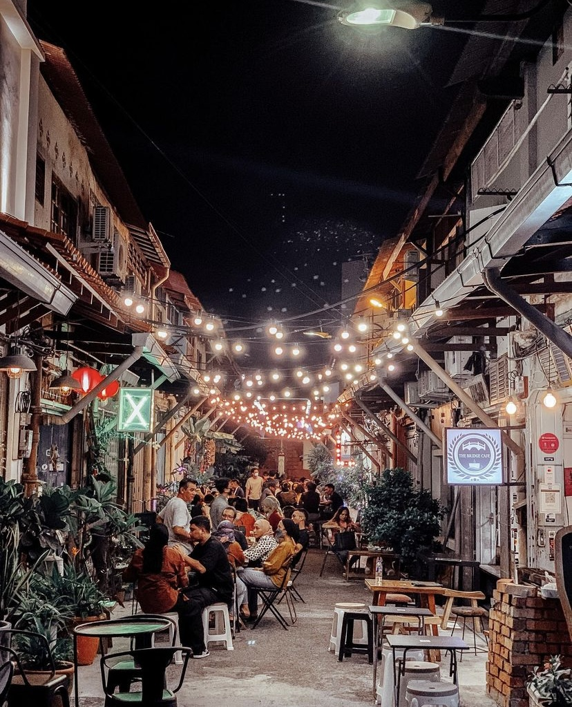
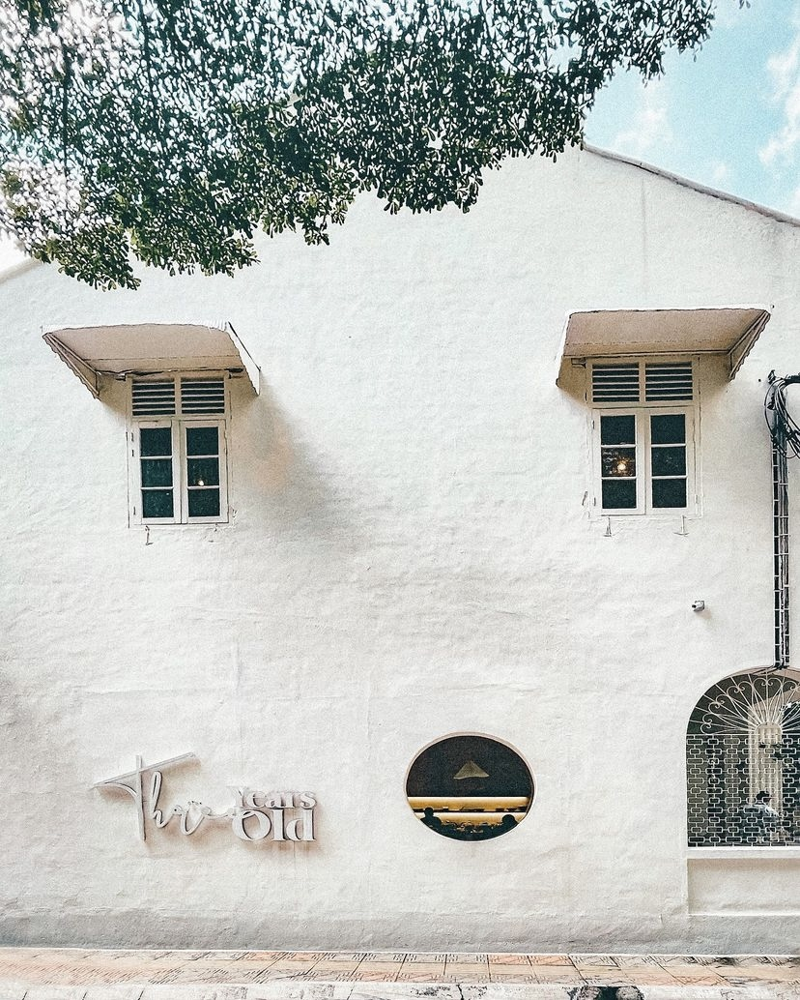
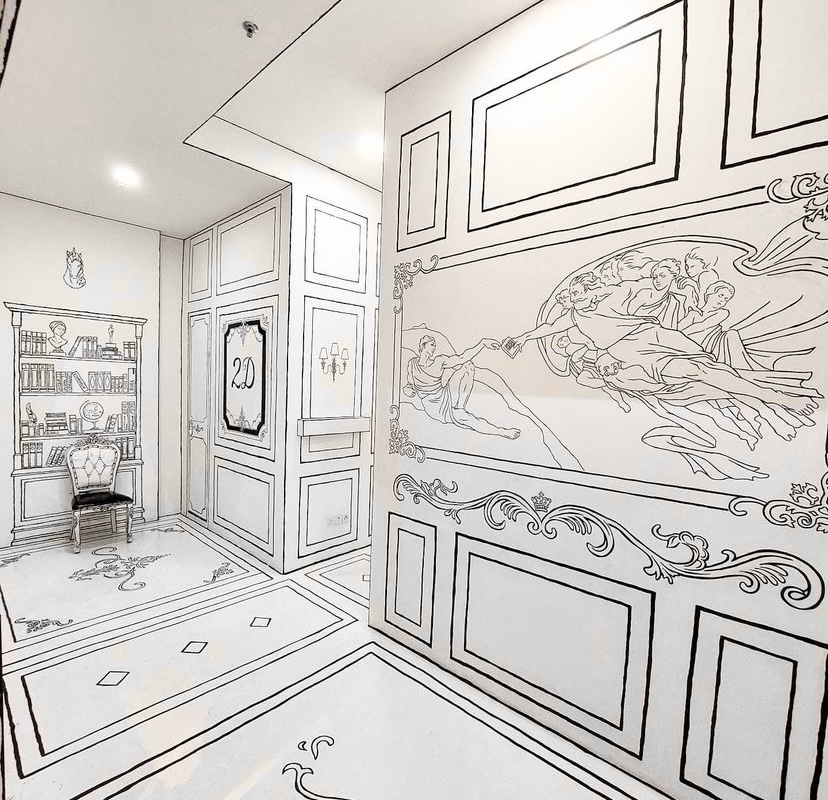

INSTAGRAMMABLE CAFE IN MALAYSIA
Tuju Cafe
| Location | 5, Lorong Jambatan, Kampung Jawa, 75200 Melaka |
| Range price | Foods Pricing started from RM1.50 and up to RM25 |
| Opening Hours | Daily - 9:30 am - 6:30 pm |
| Popular Landmarks | Jonker Walk, Melaka |
| Rating | 9.3/10 |


Three Years Old Cafe
| Location | 1, Jalan Sin Chew Kee, Bukit Bintang, 50150 Kuala Lumpur, Wilayah Persekutuan Kuala Lumpur |
| Range price | Foods Pricing started from RM6 and up to RM35 |
| Opening Hours | Daily - 9:30 am - 6:30 platform Closed - Wednesday |
| Popular Landmarks | Jalan Bukit Bintang |
| Rating | 9.1/10 |


2D Cafe
| Location | 44, Jalan SS 15/4c, Ss 15, 47500 Subang Jaya, Selangor |
| Range price | RM24 - RM60 / session |
| Accessibility | 1 - Convenience Table 2 - Ootd Spot 3 - Toilet 4 - Near to Food Streets |
| Opening Hours | Open Everyday: 3:00 pm - 12:00 am |
| Popular Landmarks | Concubine Lane, Perak |
| Rating | 6.8/10 |
